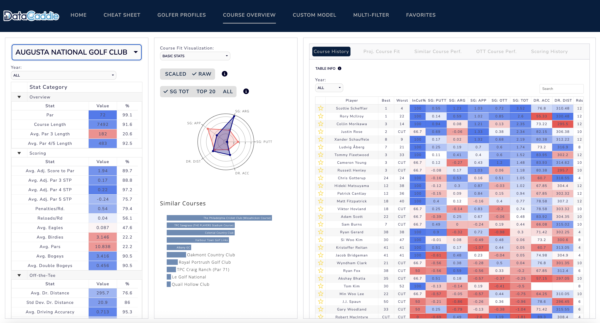

DataCaddie — Golf Analytics Web Application
- Interactive golf analytics platform for the PGA Tour, tailored towards fantasy golf.
- Python scraping pipeline of 57,000+ PGA Tour strokes-gained rounds, updated weekly since 2022.
- Comprehensive player profiles, XGBoost and SHAP Course Fit model, user-driven player ranking model, salary-cap lineup optimizer.